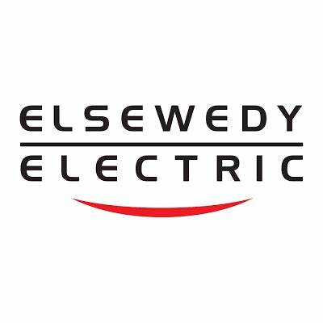

Mohamed Ahmed Kamel
Mechanical Design Engineer
About
Experience
Skills
Certifications
Contact
Experience
Elsewedy Electric 
Mechanical Design Engineer
(Jan 2025 - Present)
Developed and modeled detailed busway systems in Revit from 2D to 3D.
Created precise busway routing and generated technical documentation.
⬆ Progressing Career ⬆
ALSAKR for Trading & Manufacturing
Technical Office Engineer
(Jul 2024 - Jan 2025)
Designed mechanical systems using SolidWorks with precision.
Conducted simulations and calculations for optimized performance.
⬆ Skill Enhancement ⬆
MATEX WACH & DYE MACHINES
Mechanical Design Engineer
(Jul 2022 - Jan 2024)
Conceptualized and designed mechanical components to meet client needs.
Supervised a seven-member team in the full design and assembly process.